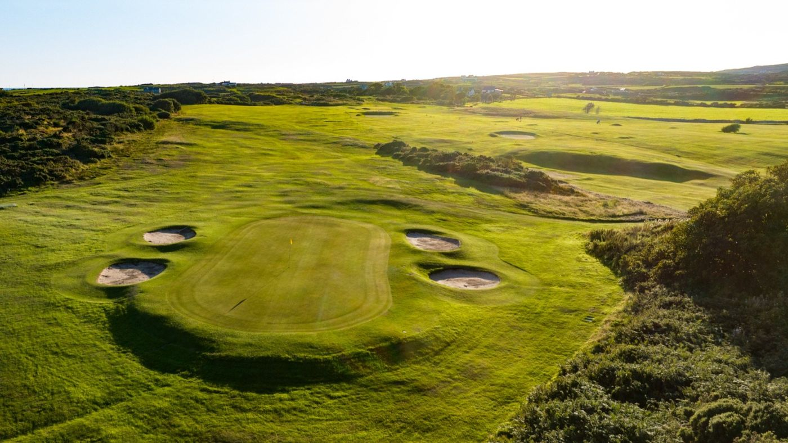
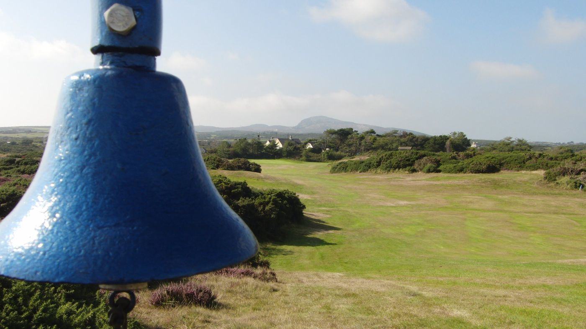
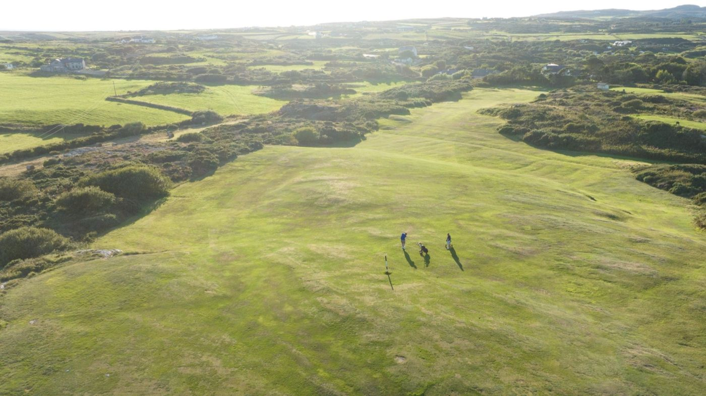

A James Braid course between Holyhead Mountain and the Irish Sea
Holyhead Golf Club, founded 1912
“A nicely presented Braid heathland course which builds to a challenging finish.”
Greg Webber, NCG Top 100s. Ranked fourth in North Wales.
“…the course was in fantastic shape and the greens immaculate. Would highly recommend.”
Neil Q., Google review. Rated 4.5 from 264 reviews.
Society days for 2027
Packages from £30 a golfer. See your price and request a date online.Book your society day

Welcome to
Holyhead Golf Club
Book a tee time
Holyhead Golf Club is at Trearddur Bay on Holy Island, Anglesey. The course was designed by five-time Open champion James Braid and opened in 1912. Visitors, societies and new members are always welcome.